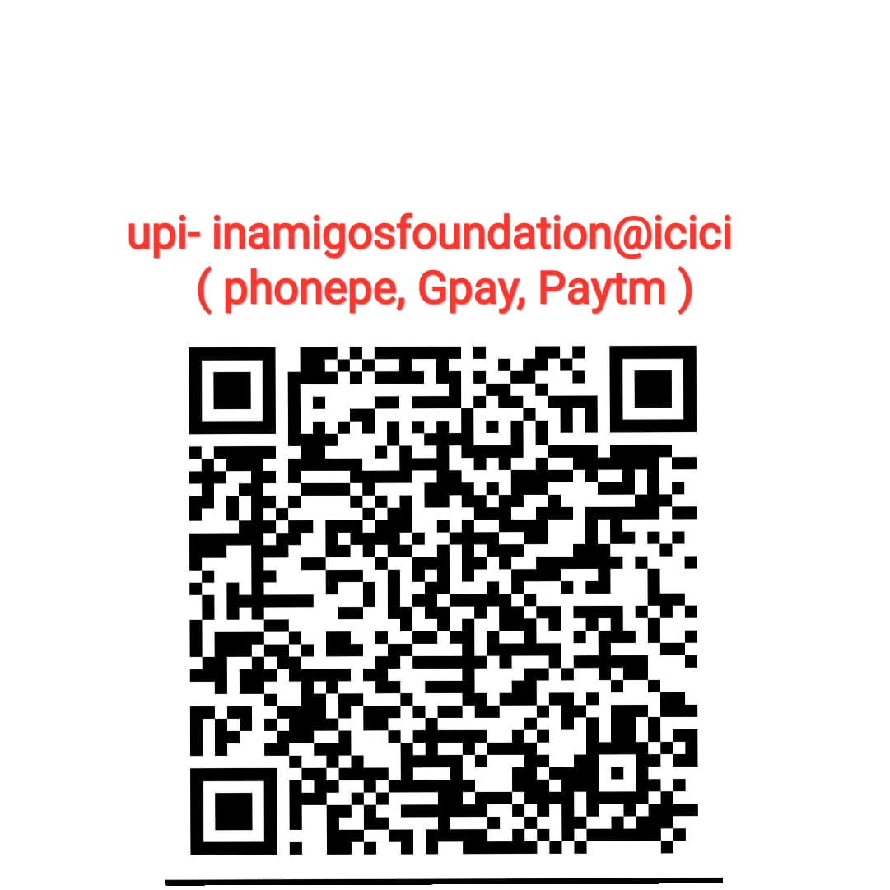

At InAmigos Foundation, we believe that every small effort creates a ripple of positive change. Join us in building stronger communities and transforming lives across India.
Creating sustainable impact through compassion, innovation and community-driven initiatives.
Providing quality learning opportunities, digital literacy programs and educational support to underserved communities.
Organizing health awareness campaigns, medical support initiatives and wellness programs for families in need.
Promoting sustainability through plantation drives, clean-up campaigns and environmental education programs.
At InAmigos Foundation, our initiatives focus on creating meaningful social impact through education, community service, women empowerment, environmental sustainability, animal welfare, and youth development.
Helping those in need by providing food, clothes, and essential resources to support vulnerable communities.
Providing education, learning opportunities, and care to underprivileged children for a brighter future.
Supporting, protecting, and rescuing animals while promoting compassion for all living beings.
Empowering women through skill development, education, and career opportunities for a better tomorrow.
Protecting nature through tree plantation drives, cleanliness campaigns, and environmental awareness programs.
Helping students and youth grow through internships, practical experience, mentorship, and skill-building initiatives.
Uniting Minds for A Change.
More than 250+ interns have permanently joined the InAmigos Foundation family, creating meaningful impact across various initiatives.
Numbers that reflect lives transformed and communities empowered.
Lives Impacted
Volunteers
Projects Completed
States Reached
Every contribution helps us create meaningful change. Your support empowers education, healthcare and community development.
Your donation directly supports our initiatives and helps us reach more communities across India.

UPI: inamigosfoundation@icici
"Volunteering with InAmigos Foundation gave me an opportunity to create real impact."
"The educational initiatives have helped many students gain confidence and opportunities."
"A truly inspiring organization dedicated to positive social change."
Join our mission and help transform lives.
Fundraising is much more than collecting donations. It builds stronger communities and creates sustainable impact.